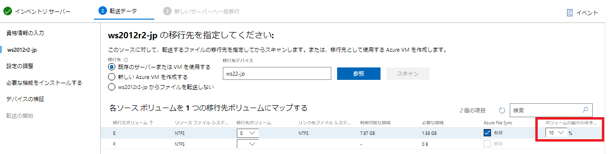
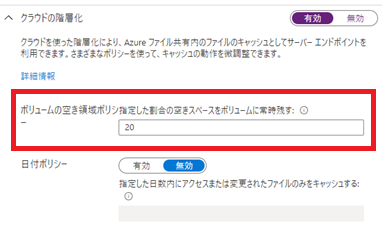
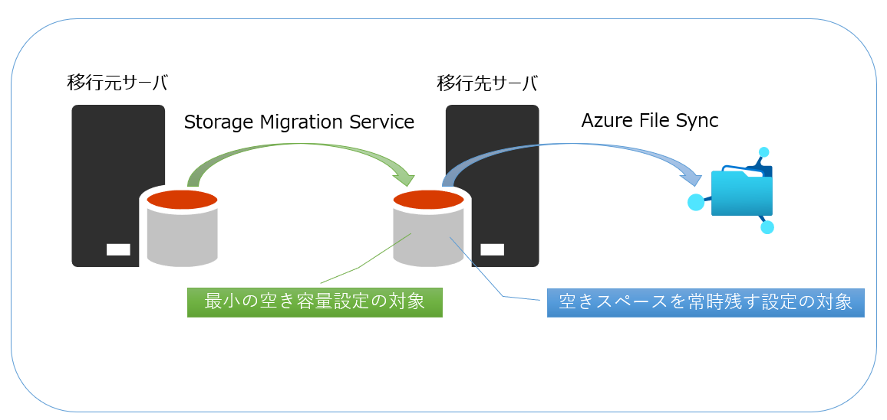

本記事は、マイクロソフト社員によって公開されております。
こんにちは、Windows サポート チームです。
今回は Storage Migration Service (SMS) と Azure File Sync (AFS) の連携機能における制限事項について記載させていただきます。
概要
Storage Migration Service と Azure File Sync の連携機能を利用した場合、Storage Migration Service の転送が終わらない。
詳細
Storage Migration Service は移行元サーバから移行先のサーバへファイルを転送します。さらに、移行先のサーバから、Azure File Sync と連携して、Azure 上にファイルを保存することも可能です。しかしながら、以下の条件に合致した場合、移行元サーバから移行先のサーバへファイルが転送されません。
<条件>
・ 転送されるファイルの総量が、Storage Migration Service の “ボリュームの最小の空き容量” の値より大きい
・ Azure File Sync 側の設定である “ボリュームの空き領域ポリシを指定した割合の空きスペースに常時残す” の値よりも
Storage Migration Service 側の “ボリュームの最小の空き容量” の値が大きい場合
// ボリュームの最小の空き容量の画面 (Storage Migration Service)

// ボリュームの空き領域ポリシを指定した割合の空きスペースに常時残す (Azure File Sync)

例えば、以下のような環境を想定します。

環境例)
転送先のボリューム: E ドライブ
E ドライブのボリュームサイズ: 100 GB
ボリュームの最小の空き容量 : 50 %
転送するファイル : 20 GB のファイルを 3 個
ボリュームの空き領域ポリシを指定した割合の空きスペースに常時残す : 20 %
この場合、ボリュームの最小の空き容量は 100 GB の 50% となりますので、50 GBになります。この状況で、Storage Migration Service が転送を開始した場合には、2 個目のファイルまでは転送されますが、3 個目のファイルは転送されません。これは、最小の空き容量の 50 GB を超えてしまうためです。Storage Migration Service は 3 個目のファイルが転送できる空き容量が確保されるまで転送を一時的に停止の状態のままになり、転送処理が終わらない状態となります。
また、”ボリュームの空き領域ポリシを指定した割合の空きスペースに常時残す”が 20 % になっているため、80 GB 以上にならないと、Azure File Sync の階層化処理が動きません。そのため、ボリュームに空き容量も確保されない状態となります。
回避策
この事象を回避するために以下のいずれかを実施することをご検討いただければと存じます。
// 回避策1
転送するファイルの総量が “ボリュームの最小の空き容量” を超えないように、事前に空き容量を確保する。もしくは “ボリュームの最小の空き容量” を非常に低い数値に変更する。
// 回避策2
Azure File Sync と連携して利用する場合には、以下の計算式を満たすように、Azure File Sync 側の設定と Storage Migration Service の設定を行う。
<計算式>
(Azure File Sync 側ローカルボリュームサイズ × ボリュームの空き領域ポリシを指定した割合の空きスペースに常時残す(%))≧((ボリューム容量 × ボリュームの最小の空き容量(%)) + 最大ファイルサイズ)
※ Azure File Sync 側のローカルボリュームサイズはオンプレミス側のボリュームを指しております。
いかがでしたでしょうか。本投稿が少しでも皆様のお役に立てば幸いです。
本情報の内容（添付文書、リンク先などを含む）は、作成日時でのものであり、予告なく変更される場合があります。